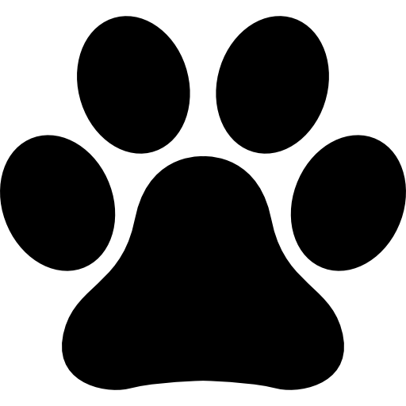

Recomanacions
- Vine amb el teu gos ja passejat i amb les necessitats fetes.
- Porta'l en dejú si s'estressa molt.
- Avisa'ns si ha tingut cops, ferides o alguna zona que li faci mal quan la
toquem.
- Raspalla al teu gos els dies previs. Arribar amb menys nusos
fa la sessió més ràpida i més agradable.
- Explica'ns si té por o no li agrada que li toquin alguna zona (potes, orelles,
cua). Així adaptem el ritme.
- Porta el xampú propi si està en tractament.
Puntualitat i no assistència
Perquè puguem treballar amb el teu gos com ell i nosaltres ens mereixem, és molt important que
siguis puntual. Treballem amb éssers vius, i una energia calmada i positiva és essencial. Per això
treballem sense presses.
Donem 15 minuts de cortesia: si passat aquest temps no ets present ni respons a les
nostres trucades, la cita quedarà anul·lada.
Cancel·lacions o canvis de cita
Entenem que de vegades sorgeixen imprevistos. Si no pots venir, avisa'ns com abans millor i sempre
per telèfon, i així podrem oferir la teva hora a un altre client.
Per reagendar, la nova cita ha de ser dins del nostre horari laboral i amb 24 hores d'antelació.
S'abonarà el 50% de la cita a la qual no s'ha assistit, més el 50% de la
nova. Aquest segon 50% es descomptarà del total de la sessió quan hi assisteixis; si
tampoc hi assisteixes, es perdrà.
Paràsits
No atenem gossos amb paràsits. És responsabilitat teva desparasitar-lo, tant per dins com per
fora, amb el teu centre veterinari. Dogneer és un espai net i lliure de paràsits per no posar en
risc la salut de la resta de clients.
Si trobem pusses, hauràs de venir a recollir el gos immediatament i es cobrarà
el 50% de la sessió perduda.
Guarderia
No oferim servei de guarderia. La nostra feina és atendre el gos que tenim a la taula, i no
podem tenir cura també del que ja ha acabat: que no faci les seves necessitats, que no
s'escapi o que no hi hagi conflictes amb altres gossos.
Un cop acabada la sessió, donem 30 minuts de marge per recollir el gos. Passat
aquest temps, es cobrarà 5€ l'hora fins a la recollida.
Canvis i devolucions
No s'accepten canvis ni devolucions d'accessoris com collars, arnesos, llits, roba i
buffs. El motiu és la higiene.
Tampoc s'accepten devolucions d'alimentació i snacks.
La resta d'accessoris es poden canviar en un termini de 15 dies des de la compra,
sempre que es tornin en perfecte estat, amb l'embalatge corresponent i l'etiqueta.